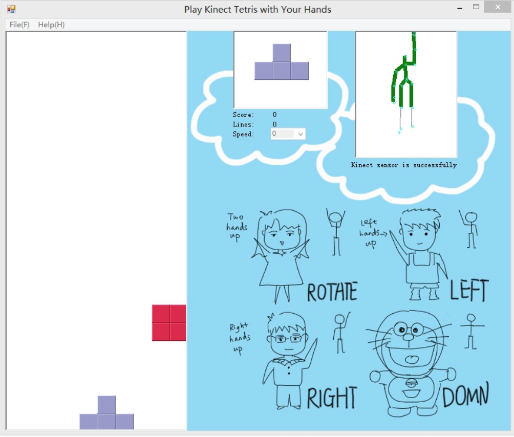
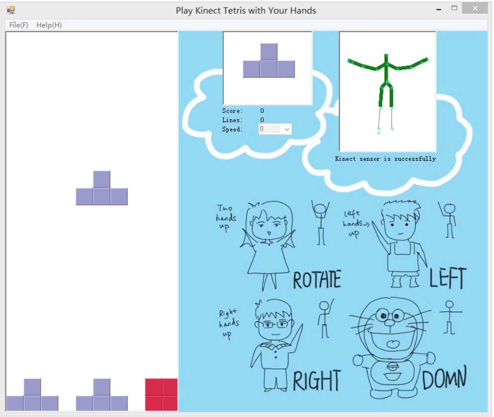
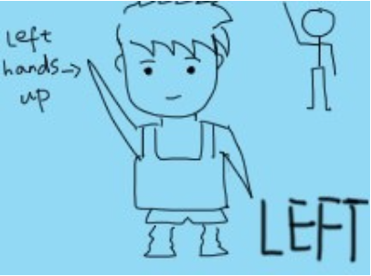
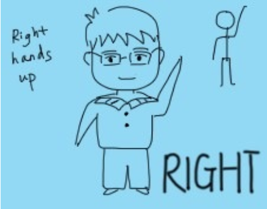
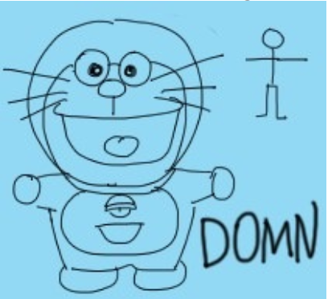
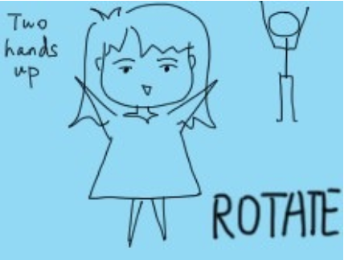
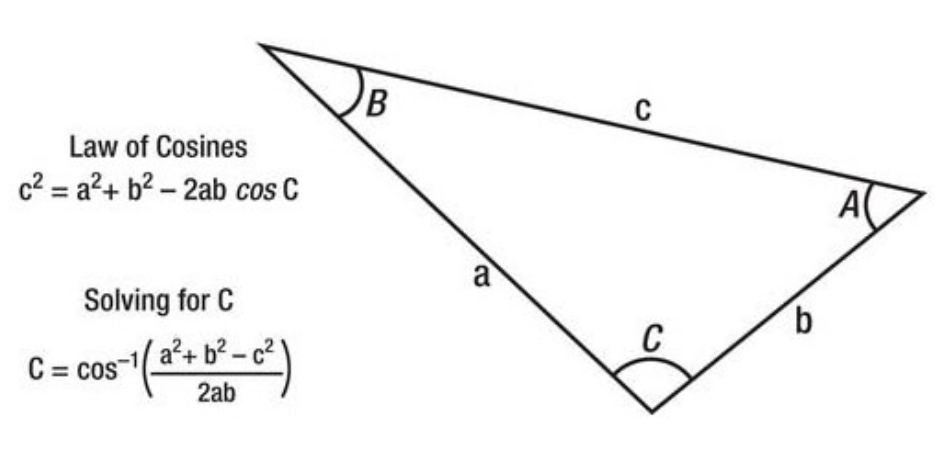
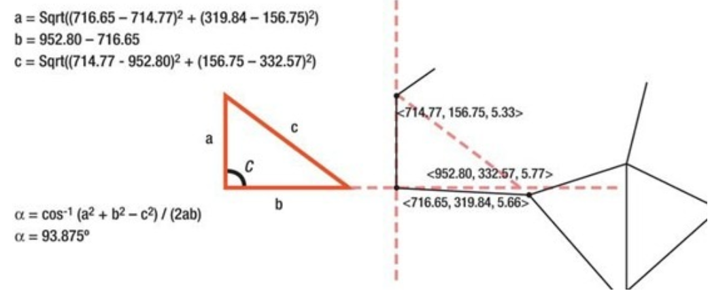

Play Tetris with Your Body (Kinect API, C#, photoshop)
Design
For this project we using Kinect and C# develop a Tetris game which is controlled by user’s body language.


As the figures show above, this application can capture players' body language and convert it to game operations. First, with the help of Kinect, body postions can be easily captured and displayed on the application panel.Four positions have been definited in our game. For example, "two hands up" referes to "rotate", "left hand up" refers to "left", "right hand up" refers to "right" and "keep two arms flat" refers to "going down quickly". This game reveals player’s skeleton movement, and help players to play the traditional game Tetris in a new way.
Play Instructions
The instructions from players could be something as below:
Instruction A: Tetris move left
Instruction B: Tetris move right
Instruction C: Tetris go down
Instruction D: Tetris Rotate
Algorithm:
This is the essential part of whole application, as it consists of player’s body language input and skeleton analysis. First of all is getting player’s input – the body movement. Thanks to the mathematical principal, we choose triangle model to analyze the player’s skeleton structure. As we know that any three points could compose a triangle, it also works on this situation as long as player has three joints. Just like the picture 3 shows below, three joints composed a triangle, from which we can calculate the angle C, which is a key parameter in this algorithm as it reveals the player’s posture. 
From these formulas we are able to deduce a new one showed in following picture
For now, the angle between two body joints has been calculated successfully, so that the player’s body language can be translated into machine language. Application could analyze whether the player is lifting his/her left hand or right hand, and then give a correct feedback.